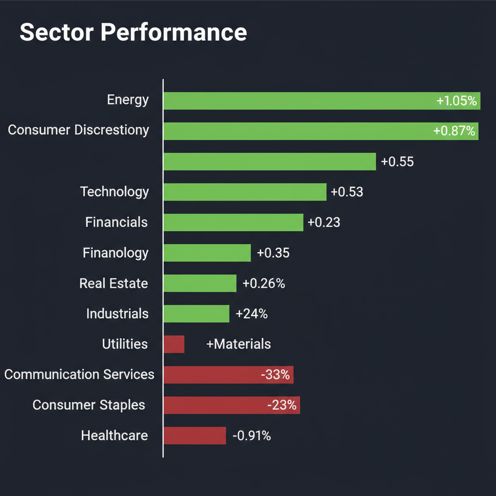
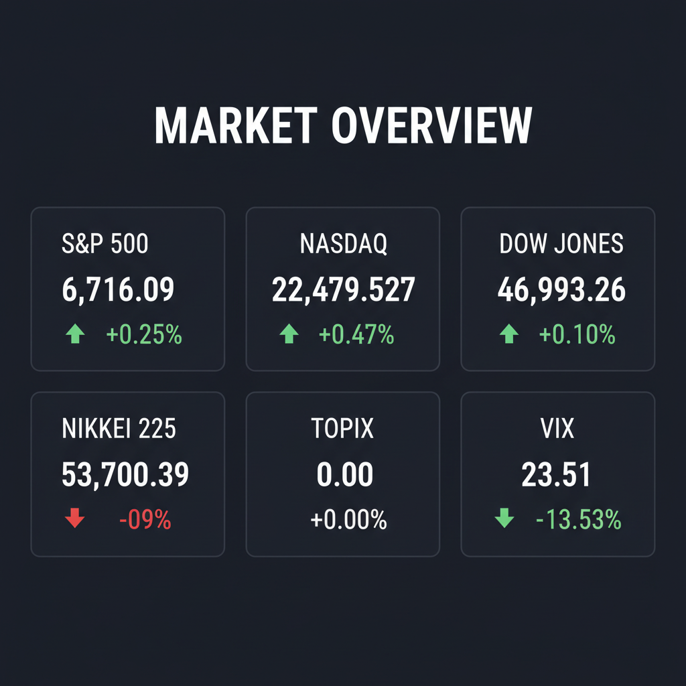

Daily Investment Report - 2026-03-18
Generated: 2026/3/18 8:15:40


投資チームミーティングの議長として、各エージェントの専門的な分析を統合し、投資家向けの最終レポートを作成いたしました。現在の市場環境を正確に把握し、直ちに実行可能な戦略を提示しています。
1. エグゼクティブサマリー
- 現在の市場は「AIブーム」と「米利下げ期待」により主要指数が最高値圏にある強力な上昇トレンドですが、少数の大型株への集中とVIX指数の高止まり（23台）という潜在的リスクを孕んでいます。
- 投資戦略としては、割高な大型ハイテク株の高値掴みを避け、AI周辺インフラ（電力・冷却）や金利正常化の恩恵を受ける日本の金融株など、キャッシュフロー創出力の高い中小型株へ資金をシフトする「バーベル戦略」が有効です。
- 同時に、インフレ再燃や日銀のタカ派転換による急落リスク（円キャリートレードの巻き戻し等）に備え、キャッシュ比率の引き上げや厳格なストップロス設定による徹底したポートフォリオ防衛が求められます。
2. 注目銘柄リスト
強気（買い推奨）
- 日本ピラー工業（6490） [時価総額: 約1,100億円]: 半導体製造装置向けの高品質なフッ素樹脂製継手で世界トップシェアを誇り、AI半導体需要の恩恵を受けながらもPER12倍台と割安で、強固な財務と高い安全マージンを有しています。
- モディーン・マニュファクチャリング（MOD） [時価総額: 約35億ドル]: AIデータセンター向け冷却システムの需要急増により売上が急拡大しており、超大型AI銘柄と比較して割安なバリュエーション（EV/EBITDA約13倍）と利益率の改善が魅力です。
- 九州フィナンシャルグループ（7180） [時価総額: 約4,000億円]: TSMC進出による九州エリアの莫大な設備投資需要と、日銀の金利正常化に伴う利ざや改善の恩恵を直接受ける割安な地方銀行株であり、増配余力も十分にあります。
- セキュア（4264） [時価総額: 約100億円]: AI顔認証と監視カメラを用いた無人店舗インフラのニッチトップであり、深刻な人手不足を背景に年率30%超の成長を遂げている黒字化済みの「隠れたテンバガー（10倍株）候補」です。
中立（様子見）
- QPS研究所（5595） [時価総額: 約400億〜500億円]: 防衛省からの大型受注実績を持つ小型SAR衛星の強力なグロース株ですが、マクロショック時のボラティリティが高いため、テクニカルな健全な調整（押し目）を待ってから打診買いすべきです。
- Recursion Pharmaceuticals（RXRX） [時価総額: 約20億ドル]: NVIDIAが出資するAI創薬のゲームチェンジャー候補ですが、営業キャッシュフローがマイナスであり、金利高止まり局面ではバリュエーション修正リスクがあるためポジションサイズを限定すべきです。
弱気（警戒）
- 従来型SaaS・レガシーソフトウェアの中小型株 [各種]: 企業のIT予算がAIインフラ構築（GPU等）に全集中しているため、従来型ソフトウェアへの投資先送りが顕著であり、業績悪化とバリュエーション低下の二重苦に直面するリスクが高いです。
- スターバックス（SBUX）等の低・中所得者向け一般消費財 [各種]: 長引くインフレの影響で消費者の「バリュー（価値）選別」が厳しくなっており、決算不調による株価急落後のデッド・キャット・バウンス（一時的自律反発）での逆張りは極めて危険です。
3. セクター推奨ランキング
- 1位：AI周辺インフラ・電力（米国の資本財・エネルギー）
AIデータセンターの爆発的増加に伴う「電力網・冷却システム」への需要は、半導体本体から周辺インフラへと波及する確実な実需テーマであり、バリュエーション的にも上値余地が大きいです。
日銀の「金利のある世界」への回帰による預貸利ざやの改善と、東証のガバナンス改革に伴う政策保有株の売却・自社株買いが強力なダブルエンジンとして機能します。
GLP-1（肥満症治療薬）やAI創薬といった爆発的成長テーマを内包しつつ、景気動向に左右されにくい不況抵抗力（ディフェンシブ性）を備えており、ポートフォリオの安定剤となります。
多極化世界における地政学リスクの長期化と米中対立の激化を背景に、各国の防衛予算増額という後戻りできない国家的なメガトレンドの恩恵を中長期的に享受できます。
AIへの予算偏重による既存IT投資の先送りや、インフレ粘着性による低・中所得者層の購買力低下により、業績の下押し圧力が最も強い警戒セクターです。
4. 今週の注目イベント
- 米国PCE（個人消費支出）デフレーターの発表: FRBの利下げ時期を占う上で最も重視されるインフレ指標であり、上振れによる株高修正リスクに最大の警戒が必要です。
- 米国雇用統計（非農業部門雇用者数・失業率）の発表: 労働市場の「ソフトランディング」が継続しているか、あるいは予期せぬ景気減速のサインが出ているかを確認する重要イベントです。
- 日銀・金融政策決定会合の動向と声明発表: 国債買入れ減額の具体策や追加利上げのタイミングに関する示唆は、円キャリートレードの巻き戻しや為替介入警戒感に直結する日本市場最大の焦点です。
- 注目企業の四半期決算発表: 主要ハイテク企業や小売企業の決算を通じ、「AIインフラへの設備投資（キャペックス）の継続性」および「消費者の選別姿勢」の実態を見極めます。
5. リスク要因
- 極端な集中リスクとAIキャペックスバブルの崩壊: 少数の巨大ハイテク株に資金が異常集中しており、AI投資の費用対効果（ROI）に市場が疑念を抱きキャペックスが減速した瞬間、インデックス全体を巻き込む連鎖的な暴落が起こる可能性があります。
- インフレの粘着性と「FRBの罠（利下げ見送り）」: 住居費やサービス価格の高止まりにより市場の利下げ期待が裏切られた場合、米長期金利が再上昇し、バリュエーションの極めて高いグロース株を中心にバリュエーション・ショックが発生します。
- 日銀のタカ派転換と円キャリートレードの暴力的な巻き戻し: 円安是正のために日銀が市場想定以上の利上げを行った場合、急激な円高による日本株（輸出企業）の業績悪化と、グローバルな流動性枯渇を引き起こすブラックスワンとなり得ます。
- テクニカル上のダイバージェンス（逆行現象）: 株価が最高値圏にある中でVIX指数が23台と高止まりしており、オプション市場（スマートマネー）が急激なダウンサイドリスクを強烈に警戒しているサインが点灯しています。
6. アクションアイテム
- ポートフォリオの現金（キャッシュ）比率を直ちに引き上げる: 現在の陶酔相場での新規の全力買いは控え、市場の急変動（急落）に備えて購買力を温存し、優良中小型株の押し目買いチャンスに備えてください。
- 厳格なストップロス（損切りライン）を設定する: 保有銘柄に対して、直近のブレイクアウト起点や20日・50日移動平均線を下回った際、感情を挟まず自動的に利益確定・損切りを行うトレイリングストップを導入してください。
- 「完璧な業績」が織り込まれた大型ハイテク株から一部利益を確定する: 高騰している超大型銘柄への極端な集中を是正し、割安でフリーキャッシュフロー創出力の高い中小型のインフラ関連・金融株へ資金をローテーション（再配分）させてください。
- ダウンサイドヘッジ（保険）の構築を検討する: VIXが短期的に低下したタイミングを利用し、ポートフォリオの保険として主要指数（S&P 500等）のプット・オプションの購入や、生活必需品・ヘルスケアなどのディフェンシブセクターへの一部資金退避を行ってください。